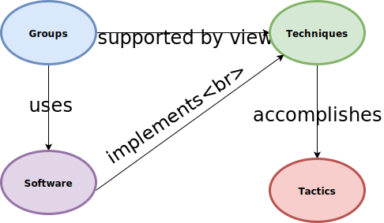

ADAPT is a project that aims at automating the detection of an APT, and if detected, classify which APT the threat resembles.
To detect an APT, we believe a statistical model that analyzes the frequency of various ATT&CK techniques observed within a network in conjunction with known APT behavior (from MITRE’s Cyber Threat Intelligence (CTI) repository) can help determine if an APT is in a network, and possibly, what APT is indicative of that behavior.
What is an APT?
|
Traditional APT Workflow

|
ATT&CKing the Killchain...
MITRE ATT&CK FrameworkTo detect events in the ATT&CK kill chain, we log the known types of attack behavior as they happen and associate them with an event in the ATT&CK kill chain. |